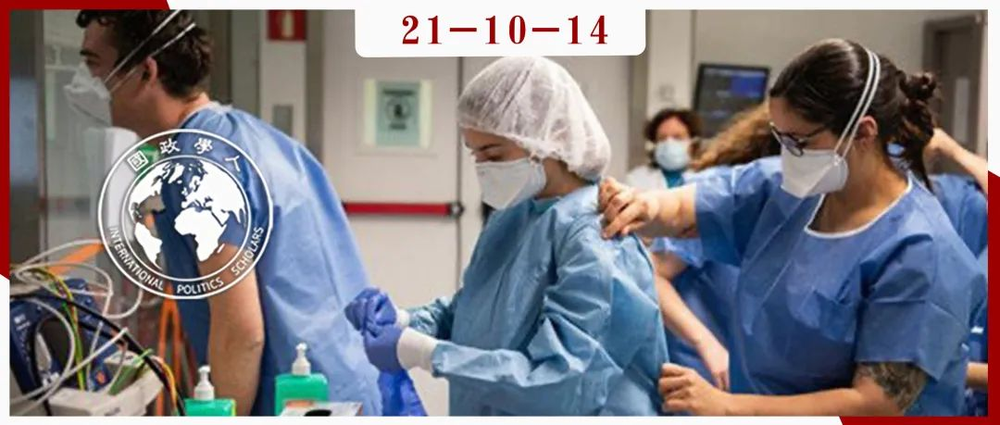

收录于合集

作品简介
作者： Sophie Harman,伦敦大学玛丽女王学院国际政治学教授。主要研究兴趣包括全球卫生、非洲机构、性别政治。其教学和研究涉及大量在肯尼亚、坦桑尼亚、乌干达、塞拉利昂、赞比亚以及日内瓦、华盛顿和纽约等全球卫生和国际政治经济中心的实地工作经验。
编译： 杨璐源（国政学人编译员，山东大学东北亚学院）
来源： Sophie Harman . (2021, May). Threat not solution: gender, global health security and COVID-19. International Affairs , 97(3), p. 601-623. Retrieved 10 May 2021, from https://doi.org/10.1093/ia/iiab012
归档： 《国际关系前沿》2021年第10期，总第37期。

内容摘要
在国际公共卫生紧急事件、突发疾病、疫情下，性别因素往往会导致男性与女性面临不同的传染率、死亡率，并各自承担由社会规范所决定的不同社会、经济责任。 性别因素因此可以决定谁将通过何种方式被传染、谁将制定政策措施、谁将在疫情前线作出应对，以及谁将承受疫情爆发的长期后果。 然而直到2020年的新冠病毒疫情，人们才终于关注到在突发的公共卫生事件和全球卫生安全中，与性别相关的决定性因素及影响。本文以此为出发点，深度分析了以往传染病疫情以及新冠疫情下性别因素的受关注程度及其背后原因，探讨了 性别因素为何在过去被忽视，而又是什么导致人们的态度在新冠疫情期间发生变化，以及这种变化对理解性别与全球卫生安全关系的影响。 文章最后将性别在全球卫生安全中的被忽视及受关注的现象相联系， 发现性别因素往往被错误地视为突发卫生事件中的一种解决方案而非威胁，最终导致了性别平等与如今全球卫生安全不相匹配的结果。
文章导读
01
研究方法
本文源自2019年至2021年间一个关于妇女、性别和全球卫生的研究项目。该项目综合采用了以下定性研究方法：首先是对来自国际组织、民间社会组织、学术界、出版界和政府中从事全球卫生领域妇女和性别问题工作的人员进行了75次半结构化访谈；第二个方法则是对于2019年至2020年全球所有卫生项目的双边和多边资助方进行政策、战略、资金分析；第三个方法则是作者本人参与的各大高级别会议的简报及书面记录等；最后，主要的研究方法是将现存的所有与妇女与全球卫生相关的文献划分为三类，包括性别与全球卫生，妇女、性别与全球卫生安全，妇女、性别与突发卫生事件。
02
性别与全球卫生安全
全球卫生安全的主要关切点一是预防和发现疾病的爆发，以使情况不会恶性发展为紧急事件，二是定义是什么构成了突发卫生事件或是流行病的爆发。 全球卫生安全的基本前提是各个国家、各国际组织 、各非国家行为体之间所构成的集体安全。 在这一前提下，所有人共同努力以发现并改善威胁人群、社会、经济健康以及全球安全的卫生问题。这种集体安全的规范性理念植根于更广泛的健康权原则以及人类面对病原体的脆弱性中。这种共同的脆弱性则要求促进国际合作中相关工具与机构的发展，同时也要求各国作出及时报告威胁的承诺，分享有关威胁以及应对威胁的药物和非药物措施信息，以支持和建设发现疫情的能力，促进卫生外交和团结。
世界卫生组织（WHO）的核心权力之一就是将全球卫生安全威胁的警报级别提高到突发卫生事件级别，至今该组织已进行了六次。然而WHO所面临的主要问题，则是各国对于集体卫生安全的限制，即全球卫生与国家安全的联系比其与人类安全的联系更加紧密与重要。因此，拥有更多财政与外交影响力的国家往往能够决定哪一种威胁重要，使得全球卫生安全被视为“保护西方国家不受其他国家影响（protecting the west from the rest）”的概念。尽管在新冠疫情中，西方被看作其他国家的威胁， 然而由于卫生健康威胁是由全球政治组成的，因此不仅仅和“威胁是什么”有关，更和“谁受到威胁”以及“谁将为其买单”有关。 有时被界定为安全威胁的事件也许不会对全球卫生造成更大风险，但它会以牺牲其他问题为代价获取更多的资金支持与政治关注。在全球卫生筹资层面，大部分资金都分配给了符合捐赠者利益的具体卫生问题。这一做法扭曲了资金的分配，往往导致需要资金的地方出现严重的资金赤字情况，对生活在中低收入国家的人造成了双重惩罚。那些威胁中低收入国家数百万条生命，但对高收入国家构成极少风险的卫生问题很少被视为全球卫生安全问题，因此没有被优先考虑；与此同时，生活在中低收入国家的人却被视为疾病的传播媒介，成为对西方的威胁，因此受到歧视。而这种歧视往往是高度性别化和种族化的。
在这些问题中，性别因素贯穿始终。女性主义的研究就处于对全球卫生安全概念与实践的批评核心，典型体现在艾滋病危机以及生殖健康层面。艾滋病在建立关于女性在疾病中的研究以及卫生健康中性别的决定性因素方面起到了关键作用，包括在这一过程中女性有偿或无偿的护理工作，因性别而由女性承担的教育与志愿工作，以及性别如何决定能否得到治疗和由于疾病带来的结构性暴力行为等。这些关于艾滋病的研究将性别驱动因素置于其工作的中心，并同时关注性别将如何决定得到治疗的途径。然而，性别与这些因素的显著性并未外溢到全球卫生安全领域，特别是在突发卫生事件方面。
03
性别因素被忽视
本节探讨了2014年-2016年，在塞拉利昂埃博拉疫情中性别因素被忽视的五种解释，它将说明全球卫生安全是如何通过层级的重要性而忽视性别因素，又是如何将性别因素视为一种解决方案而并非威胁的。
第一种解释为 由于埃博拉疫情防控的紧张程度以及混乱状况，许多人不得以忽视了性别问题以及妇女问题。 每一个人在该情况下都不知所措，因此性别便成为了一种次要问题。但值得一提的是，受访者称当他们在妇女工作上有了一定成果时，相关部门就会开始追踪与关注，但他们仅仅关注的是“女性能够做些什么（如家务、社区动员、安全埋葬等）”，而非“能为女性做些什么（如防止暴力、提供生殖健康服务等）”。
第二种解释则是 在这一问题中缺乏可靠的数据和证据。 通常由于小规模的案例研究或定性数据不足以被视为需要采取行动的确凿证据。这部分的研究数据较少，或是被认为“不够可靠”，则会在注意力有限的情况下被放置于次要位置而被忽视。
第三种解释是， 在埃博拉疫情中性别问题固然是重要的，但在问题的等级分层中，还有其他更为重要的问题。 即使埃博拉疫情对生殖、产妇以及新生婴儿的影响是广为人知的，但妇女健康相关的问题总是排在其余更为显著问题的后一位。如生殖健康、妇女安全、妇女的工作负担等等都被看作是与最紧急需求相比下的次要问题。
第四种解释则是， 许多致力于作出应对措施的人事实上根本不了解性别因素：他们既不理解这个概念，也不了解性别与埃博拉或健康之间的关系。 以传染病为例，在大部分人看来，所有人受感染的几率是相同的，因此不应该存在不同的影响。
第五种解释则是， 性别问题在大量的灾后报告总结中并没有被看做是一个主要的问题。 尽管性别因素在埃博拉疫情中的影响在一定程度上被了解，但该部分内容却最终在报告中缺失。
驱动忽视的因素表明了性别被建构成一个处于边缘关注或是次要关注的问题，即在社会中创造一个组成卫生紧急事件的层级，以决定哪些问题和人可以取得优先权。正如埃博拉和寨卡疫情所显示的那样，大部分生活在中低水平收入国家的贫穷女性就处于这一层级的最底端。 在这里，性别因素从不被视为是一种威胁，而是被看作一种对于突发卫生事件的解决方案——一种可以维持免费或低薪劳动力、志愿护理服务以及社会保护即危机吸收的解决方案。 因此，这就导致在每一次突发卫生事件中总是有更多的女性加入进解决危机的工作中，进一步加剧了对性别决定因素及其后果的忽视问题。
04
性别因素关注度与新冠病毒疫情
2020年-2021年的新冠病毒疫情标志着性别因素在突发卫生事件中受关注度发生了显著变化，越来越多的机构和组织认可了性别因素在新冠疫情中的重要性。本节内容则探讨了导致性别因素关注度显著提高的因素。
第一， 如果没有埃博拉疫情和寨卡疫情中支持行动的证据，以及艾滋病研究中产生的对性别和疾病更广泛的了解，人们就不可能在新冠病毒疫情中意识到性别因素带来的影响。 在研究基础上得出的种种倡议、结果，强调了性别因素富有代表性的问题，从而激发了对这一问题的更多支持与关注。
第二，新冠病毒疫情是“Me Too”运动以及美国弗洛伊德黑人事件后的第一次流行病疫情。这些事件共同导致了 人们对于性别以及种族不平等问题意识的深化。 随着新冠肺炎在影响、感染率和死亡率方面的不平等变得明显，关键行为者很难不承认这个问题。
第三， 新冠病毒疫情的影响范围较以前远远不同。 尽管在新冠病毒疫情爆发的前六个月里，男性与女性的感染率大致相同，但之后则有数据表明男性的感染率与死亡率较女性更高。
第四，除了以上的改变之外，由于大量关于新冠病毒疫情中性别的报道更加具体关注于由性别因素带来的负担以及其对妇女及女孩造成的影响，高级别的政治性宣言、调查项目以及关于性别的倡议都 将女性在新冠病毒疫情中的经历置于关注中心。
第五，新冠病毒疫情带来的影响不仅仅落在了中低收入国家的贫穷女性上，同时 也落在了生活在高收入国家的妇女身上 。这一现象恰恰说明了当问题涉及到生活在高收入国家的人时，该问题才会成为世界的关注焦点。
然而，得到显著增长的关注度以及研究，却会造成更大的风险。 首先，全球卫生安全等级层次中的关注度，会导致吸引卫生安全行为者的性别问题被挑选出来，并被排除在其他问题之外。 正如埃博拉疫情期间将性别问题划归为社会保护类一样，将这个重要问题简化为了一种边缘问题。往往只有当性别问题被视为危机的解决方案，如进行性别规范，妇女将在家中教育孩子，性别问题才被认为是相关的。但这样的规范实际上会对在家的妇女造成威胁，对其精神和身体健康造成损失，可这往往被视为与突发卫生事件无关的因素。 其次，对于性别因素的关注度提升会导致对于女性的关注度以及代表性降低。 关注度是一种被全球卫生安全行为者用来在公共平台宣传性别以及研究的工具，却同时将性别在政策以及战略空间中的被忽视情况永久化，或是将性别作为其推进个人兴趣得到关注的话题。
在全球卫生中存在的不平等现象在新冠病毒疫情之前的流行病中就已存在，而所谓的“重建得更好（build back better）”将会又一次取决于对性别的狭义解读——女性是危机中的一种解决方案。只有把性别视作威胁而非解决方案时，全球卫生安全中的性别平等问题才能获得最终的进步。
05
结语
性别是卫生安全的一个威胁，因为围绕劳动、家庭角色、护理、获得治疗和领导权的性别规范都给妇女，特别是低薪妇女带来了不良的健康结果和负担。 在突发卫生事件下，当所有这些情况都加剧时，性别问题将成为更大的健康安全威胁。在全球卫生安全实践中，性别作为威胁很少得到承认。当性别得到承认时，它往往被当做一种解决方案。在这种情况下， 性别规范了谁承担护理的责任(女性)、谁承担领导的责任(男性)。
未来对突发卫生事件和新冠肺炎性别方面的进一步研究将丰富我们对这些问题的理解，然而这并不能解决全球卫生安全的性别问题。从艾滋病到埃博拉疫情，从寨卡疫情再到新冠病毒疫情，种种现象表明——重要的是如何理解性别以及如何落实这种理解。 只要性别被视为解决突发卫生事件的解决方案而非威胁，那么性别平等与全球卫生安全将不相匹配。
译者评述
随着人类社会的发展，性别因素已经愈发成为各个领域关注与研究的焦点。在国际政治舞台上，不论是理论层面的女性主义视角，还是针对各国际事件中的性别问题研究，都在近年来越发丰富。
本文作者探讨的，正是全球公共卫生安全中的性别因素。全文首先就全球卫生安全作了简要分析，由此引入艾滋病危机，提出性别因素在这一关键事件中的重要性。随后以塞拉利昂埃博拉疫情为例，深入探讨了性别因素在这一事件中被忽略的五个原因，提出性别因素未被视作一种威胁的论点。之后作者阐释了新冠疫情下人们对于性别因素关注度的显著变化及其背后原因。本文作者最终的观点较为新颖——关注度的显著提高，会带来更多风险。其中最大的原因，就在于性别因素往往不被视为是一种威胁，而是被看作一种对于突发卫生事件的解决方案，即一种可以维持免费或低薪劳动力、志愿护理服务以及社会保护即危机吸收的解决方案。
在笔者看来，这一观点能够给予读者对国际政治中性别因素新的启发，打破传统的思维定式。如果把关注度增加的显著变化视作表面，那么人们对于性别因素的深层理解又是否从解决方案改变为了威胁？在全球女性主义、平权运动快速发展的当下，人们除了需要改变对性别这一概念的表面理解之外，也同样需要转变对其在深层次的理解。正如作者所说，只有当全球卫生安全把性别视作威胁而非解决方案时，性别平等才能获得最终的进步。继续将女性所能提供的免费或低薪劳动力、志愿护理服务等视为解决危机的办法而非导致新风险的威胁，最终会使得性别平等这一概念与全球卫生安全不相匹配。
词汇整理
国际关注的突发公共卫生事件 Public health emergencies of international concern (PHEIC)
全球卫生安全 global health security
忽视和可视 neglect and visibility
责编 | 石稚瑄 尤力 朱忻博
排版 | 顾金源 臧泽华
文章观点不代表本平台观点，本平台评译分享的文章均出于专业学习之用, 不以任何盈利为目的，内容主要呈现对原文的介绍，原文内容请通过各高校购买的数据库自行下载。

国政学人
支持学术公益与知识传播
微信扫一扫赞赏作者 __赞赏
已喜欢，对作者说句悄悄话
取消 __
发送给作者
发送
最多40字，当前共字
上一页 1/3 下一页
长按二维码向我转账
支持学术公益与知识传播
受苹果公司新规定影响，微信 iOS 版的赞赏功能被关闭，可通过二维码转账支持公众号。